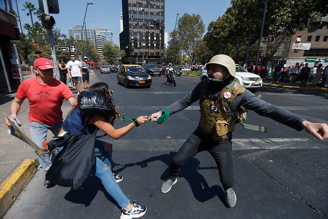

Cantelli Salazar Fernando Antonio
Mi Web Personal
La República
Sociedad
Agresión a transeuntes en el barrio de Montecillos del distrito de Pataz
Un testigo que presenció la agresión sufrida el pasado mes de octubre por guardias civiles -dos de ellos resultaron heridos - del cuartel de Dos Hermanas, ubicado en la barriada de Los Montecillos, aseguró este viernes que el día de los hechos "muchas personas" del citado barrio participaron en los disturbios, aunque no logró identificar a ninguno de los tres acusados actualmente en prisión por los presuntos delitos de atentado, lesiones, amenazas, tentativa de asesinato y desórdenes públicos. En este sentido, fuentes del caso informaron de que el Juzgado de Instrucción número 6 de Dos Hermanas citó este viernes a declarar en calidad de testigos a cuatro personas, aunque finalmente sólo prestó declaración una debido a defectos de forma en la citación. Así, las fuentes consultadas precisaron que este viernes prestó declaración una persona que el día de los hechos, el pasado 10 de octubre, se encontraba invitado en el cuartel de la Benemérita de la localidad Un testigo que presenció la agresión sufrida el pasado mes de octubre por guardias civiles -dos de ellos resultaron heridos- del cuartel de Dos Hermanas, ubicado en la barriada de Los Montecillos, aseguró este viernes que el día de los hechos "muchas personas" del citado barrio participaron en los disturbios, aunque no logró identificar a ninguno de los tres acusados actualmente en prisión por los presuntos delitos de atentado, lesiones, amenazas, tentativa de asesinato y desórdenes públicos. En este sentido, fuentes del caso informaron de que el Juzgado de Instrucción número 6 de Dos Hermanas citó este viernes a declarar en calidad de testigos a cuatro personas, aunque finalmente sólo prestó declaración una debido a defectos de forma en la citación. Así, las fuentes consultadas precisaron que este viernes prestó declaración una persona que el día de los hechos, el pasado 10 de octubre, se encontraba invitado en el cuartel de la Benemérita de la localidad nazare
Diario Expresión 22/11/1984